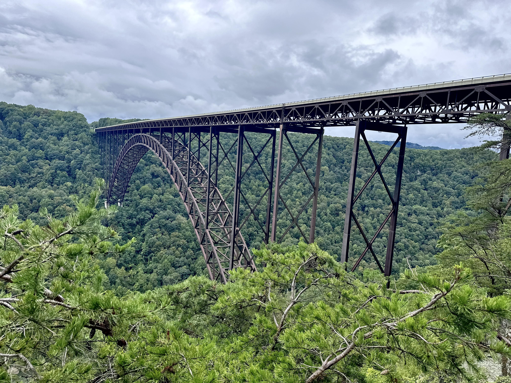

Park Protection Success Stories

View at New River Gorge National Park, in Fayetteville, WV.
The Great American Outdoors Act has funded restoration projects across the National Park System at parks across the country.
From historic structure maintenance and campground revitalization, to ecosystem protections and shoreline stabilization,
GAOA funding has allowed projects of all sizes and scope to be completed.
Read three stories to learn how the Great American Outdoor Act is working to protect our national parks.
- New River Gorge National Park, West Virginia
Proposed $1.2M in Funding for Deferred Maintenance
- Morristown National Historical Park, New Jersey
GAOA Funding Helps to Preserve Historic Wick Barn
- Statue of Liberty National Monument, New York
$22M in Funding for Infrastructure Project